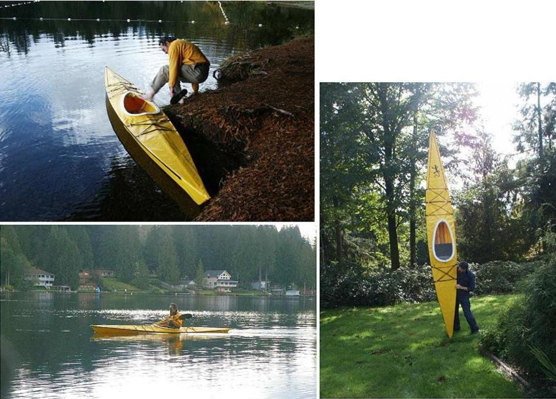

| Yarra / Yarra LC | Menu Last Page Next Page |
|

Zow Miller and his yellow Yarra folder. The Yarra is a small 14.5' X 24" touring kayak. It has 4 tube sections per stringer and a compact folded size. The Yarra LC open cockpit (washboard coaming) version can be built if more room is required for entry / exit and gear access. The Yarra Offsets and the The Yarra LC Offsets are at the end of this section. Use the (BACK) key to return.
|
|